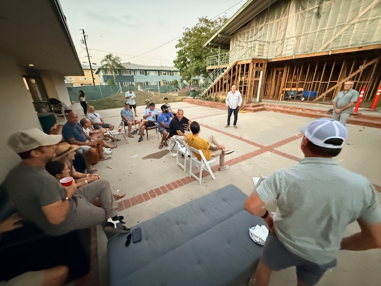
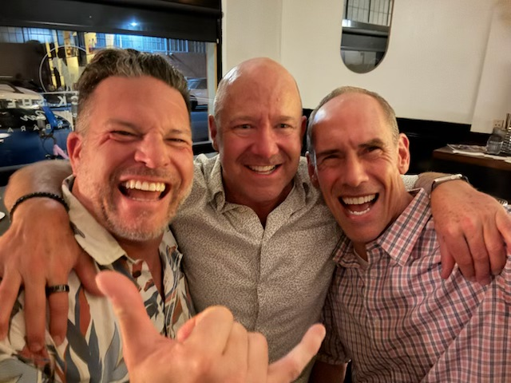
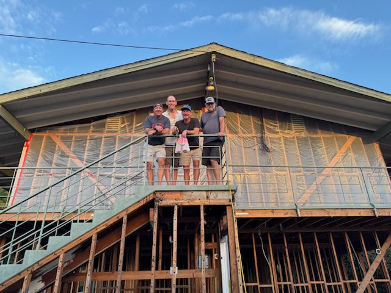

Warm greetings to all Lambda Chi Alpha Brothers,
As Thanksgiving approaches, it's a fitting time to reflect on an extraordinary year for our Zeta Eta brotherhood—and to express our gratitude to the many brothers who have helped make it possible.
We entered 2026 with an ambitious vision: to restore Lambda Chi Alpha to UCSB, rebuild our chapter house, and create a lasting legacy for future generations of brothers.
To make that vision a reality, we established three priorities:
- Reconnect our alumni brotherhood.
- Reestablish a strong partnership with Lambda Chi Alpha National.
- Reengage with UCSB leadership to establish a path toward restoring Lambda Chi Alpha's recognition as an approved fraternity on campus.
As the year draws to a close, we're excited to report that meaningful progress has been made on every front!
2026: PROGRESS AT A GLANCE
- 500+ Alumni — Over 500 Zeta Eta brothers now receive our newsletter thanks to an extensive effort to update our contact database and reconnect alumni.
- $254,460 Raised — An extraordinary result in the 2026 Founder's Day Challenge.
- #1 Nationally — Zeta Eta led all Lambda Chi Alpha chapters in Founder's Day fundraising.
- 2027 Milestones — Construction is on schedule for completion of the house renovation in July 2027, and Lambda Chi Alpha National has committed its support for recolonization of the Zeta Eta chapter.
These milestones demonstrate something important: The Zeta Eta brotherhood is alive, engaged, and moving forward!
Reconnecting Our Brotherhood
One of our greatest accomplishments this year has been reconnecting brothers across generations.
We've expanded and updated our alumni contact database, now reaching more than 500 brothers through our newsletters, and renewed personal connections that, for many, had been dormant for years.
A highlight was our October alumni gathering at the chapter house, held during UCSB's All Gaucho Alumni Reunion Weekend. Approximately 30 brothers attended in person, with another 10–12 joining via Zoom, to reconnect, share memories, and hear firsthand about our plans for the future.

It was a powerful reminder that while our chapter has been inactive on campus for more than two decades, the bonds of brotherhood remain strong.
An Extraordinary Fundraising Achievement!
Our alumni have once again demonstrated the extraordinary generosity and commitment of Zeta Eta.
Through the 2026 Founder's Day Challenge, Zeta Eta raised an incredible $254,460 for the Lambda Chi Alpha Educational Foundation—finishing FIRST among all Lambda Chi Alpha chapters nationwide!
This remarkable achievement follows last year's first-place finish among non-active chapters, when our brothers raised $48,800.
Special thanks to Brother Matt Shieman, whose leadership and generous matching commitment helped inspire this year's extraordinary result, and to every brother who contributed.
These contributions support National's Educational Foundation and its mission to help today's Lambda Chi brothers:
- Grow — Through scholarships and programs fostering belonging, personal development, and life skills.
- Serve — Through mentoring and volunteer opportunities that strengthen chapters and communities.
- Lead — Through officer training, conferences, and leadership development.
Building on this success, a new $1 million fundraising campaign has been initiated to support the Educational Foundation's Men with Purpose campaign.
Our message to National is unmistakable: Zeta Eta is back—and we're committed to helping shape the next generation of Lambda Chi men.

Honoring a Lifetime of Service
Another proud moment this year was seeing Brother Ron Wolfe receive Lambda Chi Alpha's prestigious Order of Merit at the National General Assembly in Kansas City.
Ron's more than 50 years of dedication to our fraternity, including his stewardship of the chapter property and leadership of the House Corporation, have helped make today's renovation possible.
We are grateful for Ron's extraordinary service and for the many brothers whose dedication has sustained Zeta Eta through the years.

VIEW HOUSE RENOVATION PROGRESS ON OUR WEBSITE
Looking Ahead: 2027
With the foundation established in 2026, the coming year promises to be even more exciting.
Our priorities include:
- Recolonization: Work with Lambda Chi Alpha National toward completion of the recolonization approval process during summer 2027.
- UCSB Partnership: Meet with UCSB leadership over the next 90 days to strengthen our relationship, explore opportunities for collaboration, and establish a path toward regaining recognition as an approved fraternity on campus.
- Alumni Advisory Team: Work with National to establish an Advisory Committee and identify a High Pi, or team of alumni advisors, to mentor and support the future chapter.
- House Renovation: Continue toward the July 2027 completion target.
- Spring Alumni Gathering: Organize a workday and BBQ at the chapter house in March or April.
- Regional Alumni Events: Coordinate with National to host two or three regional gatherings during 2027, with Northern and Southern California locations selected near the greatest concentrations of brothers.
- Staying Connected: Continue publishing regular newsletters and website updates to keep brothers informed, share progress, and coordinate those who want to actively participate in recolonizing Lambda Chi Alpha at UCSB.
These are ambitious goals, and achieving them will require continued cooperation among our alumni, the House Corporation, Lambda Chi Alpha National, and UCSB.
But after the progress we've made this year, we have every reason to be optimistic!
How You Can Help
The next chapter of Zeta Eta's history will be written by all of us.
As we move into 2027, we'll be looking for brothers willing to contribute their time, professional experience, mentoring, connections, and financial support.
Whether you can help organize an alumni gathering, serve on an advisory committee, support fundraising, or simply reconnect with brothers you've lost touch with, there's a place for you in this effort.
VISIT OUR WEBSITE — STAY CONNECTED & GET INVOLVED
Update your contact information • Follow construction progress • Learn about upcoming events • Volunteer to help